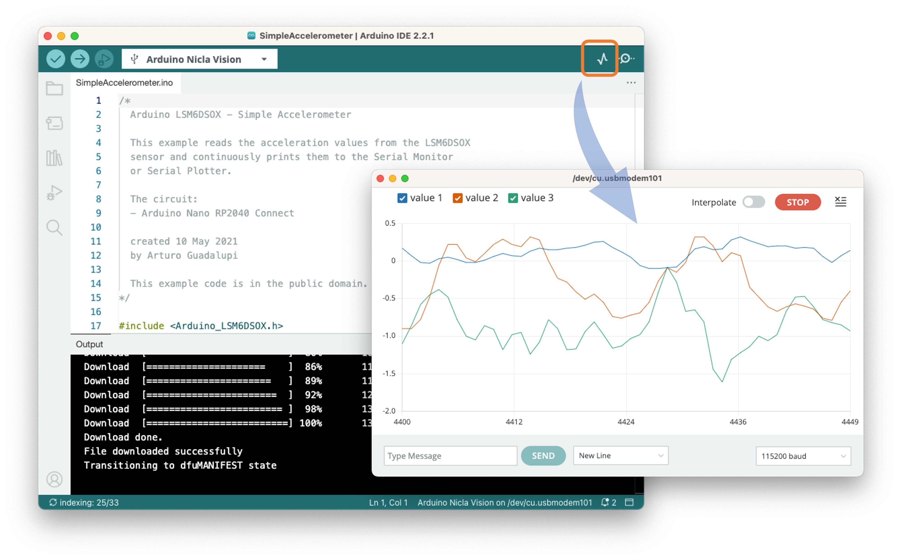
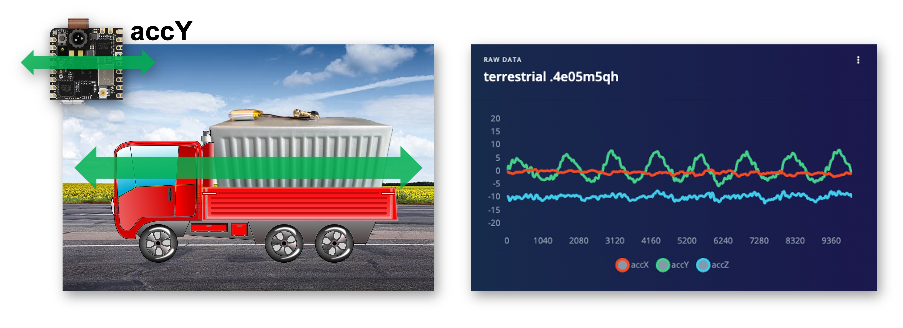
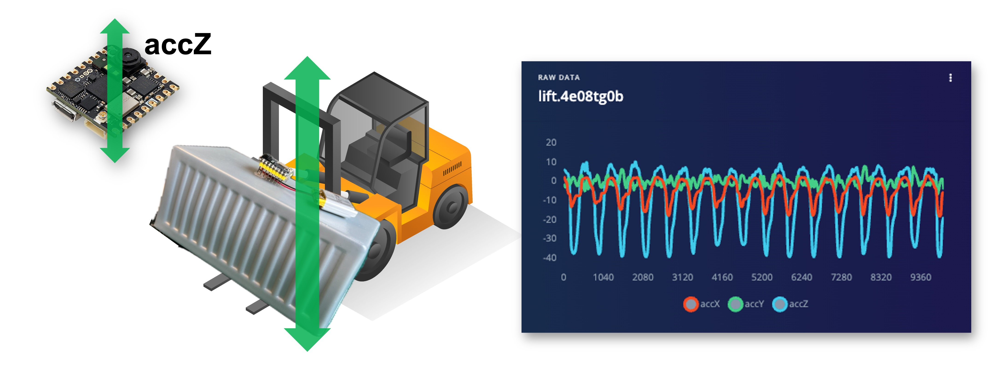
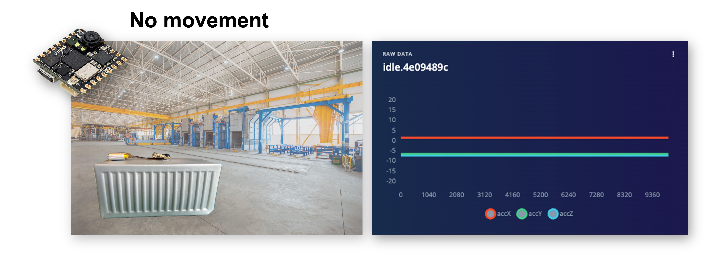
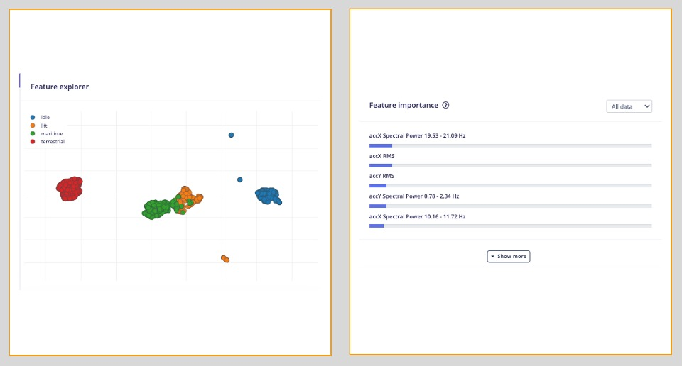
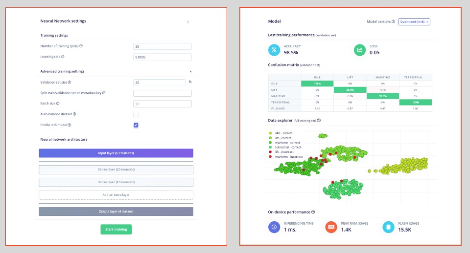
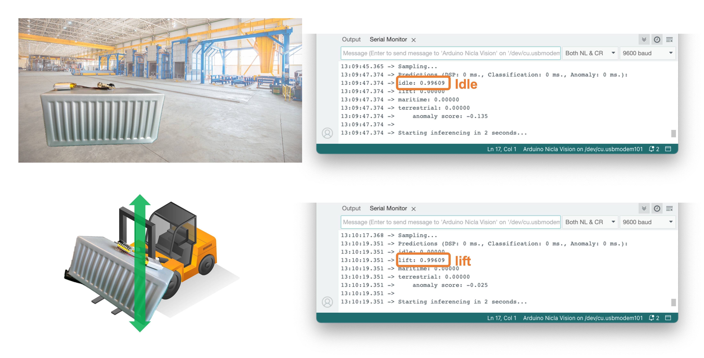

Classificazione del Movimento e Rilevamento delle Anomalie
Introduzione
I trasporti sono la spina dorsale del commercio globale. Milioni di container vengono trasportati ogni giorno tramite vari mezzi, come navi, camion e treni, verso destinazioni in tutto il mondo. Garantire il transito sicuro ed efficiente di questi container è un compito monumentale che richiede di sfruttare la tecnologia moderna e TinyML è senza dubbio una di queste.
In questo tutorial, lavoreremo per risolvere problemi reali relativi al trasporto. Svilupperemo un sistema di Motion Classification e Anomaly Detection utilizzando la scheda Arduino Nicla Vision, l’IDE Arduino e Edge Impulse Studio. Questo progetto ci aiuterà a comprendere come i container subiscono forze e movimenti diversi durante le varie fasi del trasporto, come il transito terrestre e marittimo, il movimento verticale tramite carrelli elevatori e i periodi di stazionamento nei magazzini.
- Impostazione della scheda Arduino Nicla Vision
- Raccolta e pre-elaborazione dei dati
- Creazione del modello di classificazione del movimento
- Implementazione del rilevamento delle anomalie
- Test e Analisi nel Mondo Reale
Alla fine di questo tutorial, si avrà un prototipo funzionante in grado di classificare diversi tipi di movimento e rilevare anomalie durante il trasporto di container. Questa conoscenza può essere un trampolino di lancio per progetti più avanzati nel campo emergente di TinyML che coinvolge le vibrazioni.
Installazione e test dell’IMU
Per questo progetto, useremo un accelerometro. Come spiegato nel Tutorial, Configurazione di Nicla Vision, la Nicla Vision Board ha un IMU a 6 assi integrato: giroscopio 3D e accelerometro 3D, il LSM6DSOX. Verifichiamo se la libreria IMU LSM6DSOX è installata. In caso contrario, la si installa.
Poi si va su Examples > Arduino_LSM6DSOX > SimpleAccelerometer e si esegue il test dell’accelerometro. Si può verificare se funziona aprendo l’IDE Serial Monitor o Plotter. I valori sono in g (gravità terrestre), con un range di default di +/- 4g:

Definizione della Frequenza di Campionamento:
La scelta di una frequenza di campionamento appropriata è fondamentale per catturare le caratteristiche del movimento che interessa studiare. Il teorema di campionamento di Nyquist-Shannon afferma che la frequenza di campionamento dovrebbe essere almeno il doppio della componente di frequenza più alta nel segnale per ricostruirlo correttamente. Nel contesto della classificazione del movimento e del rilevamento delle anomalie per il trasporto, la scelta della frequenza di campionamento dipenderebbe da diversi fattori:
Natura del movimento: Diversi tipi di trasporto (terrestre, marittimo, ecc.) possono comportare diversi intervalli di frequenze di movimento. Movimenti più rapidi potrebbero richiedere frequenze di campionamento più elevate.
Limitazioni hardware: La scheda Arduino Nicla Vision e tutti i sensori associati potrebbero avere limitazioni sulla velocità con cui possono campionare i dati.
Risorse di Calcolo: Frequenze di campionamento più elevate genereranno più dati, il che potrebbe essere computazionalmente intensivo, particolarmente critico in un ambiente TinyML.
Durata della Batteria: Una frequenza di campionamento più elevata consumerà più energia. Se il sistema funziona a batteria, questa è una considerazione importante.
Archiviazione Dati: Un campionamento più frequente richiederà più spazio di archiviazione, un’altra considerazione cruciale per i sistemi embedded con memoria limitata.
In molte attività di riconoscimento delle attività umane, vengono comunemente utilizzate frequenze di campionamento da 50 Hz a 100 Hz circa. Dato che stiamo simulando scenari di trasporto, che in genere non sono eventi ad alta frequenza, una frequenza di campionamento in quell’intervallo (50-100 Hz) potrebbe essere un punto di partenza ragionevole.
Definiamo uno sketch che ci consentirà di acquisire i nostri dati con una frequenza di campionamento definita (ad esempio, 50 Hz):
/*
* Based on Edge Impulse Data Forwarder Example (Arduino)
- https://docs.edgeimpulse.com/docs/cli-data-forwarder
* Developed by M.Rovai @11May23
*/
/* Include ----------------------------------------------------------------- */
#include <Arduino_LSM6DSOX.h>
/* Constant defines -------------------------------------------------------- */
#define CONVERT_G_TO_MS2 9.80665f
#define FREQUENCY_HZ 50
#define INTERVAL_MS (1000 / (FREQUENCY_HZ + 1))
static unsigned long last_interval_ms = 0;
float x, y, z;
void setup() {
Serial.begin(9600);
while (!Serial);
if (!IMU.begin()) {
Serial.println("Failed to initialize IMU!");
while (1);
}
}
void loop() {
if (millis() > last_interval_ms + INTERVAL_MS) {
last_interval_ms = millis();
if (IMU.accelerationAvailable()) {
// Read raw acceleration measurements from the device
IMU.readAcceleration(x, y, z);
// converting to m/s2
float ax_m_s2 = x * CONVERT_G_TO_MS2;
float ay_m_s2 = y * CONVERT_G_TO_MS2;
float az_m_s2 = z * CONVERT_G_TO_MS2;
Serial.print(ax_m_s2);
Serial.print("\t");
Serial.print(ay_m_s2);
Serial.print("\t");
Serial.println(az_m_s2);
}
}
}Caricando lo sketch e ispezionando il Serial Monitor, possiamo vedere che stiamo catturando 50 campioni al secondo.
Si noti che con la scheda Nicla appoggiata su un tavolo (con la telecamera rivolta verso il basso), l’asse z misura circa 9.8m/s\(^2\), l’accelerazione terrestre prevista.
Il Caso di Studio: Trasporto Simulato di Container
Simuleremo il trasporto di container (o meglio di pacchi) attraverso diversi scenari per rendere questo tutorial più comprensibile e pratico. Utilizzando l’accelerometro integrato della scheda Arduino Nicla Vision, cattureremo i dati di movimento simulando manualmente le condizioni di:
- Trasporto Terrestre (su strada o treno)
- Trasporto Marittimo
- Movimento Verticale tramite Carrello Elevatore
- Periodo di stazionamento (inattivo) in un Magazzino
Dalle immagini sopra, possiamo definire per la nostra simulazione che i movimenti principalmente orizzontali (asse x o y) dovrebbero essere associati alla “classe Terrestre”, i movimenti verticali (asse z) alla “classe di Sollevamento”, nessuna attività alla “classe di Inattività” e il movimento su tutti e tre gli assi alla classe Marittima.
Raccolta Dati
Per la raccolta dati, possiamo avere diverse opzioni. In un caso reale, possiamo avere il nostro dispositivo, ad esempio, collegato direttamente a un contenitore e i dati raccolti su un file (ad esempio .CSV) e archiviati su una scheda SD (tramite connessione SPI) o un repository offline nel computer. I dati possono anche essere inviati in remoto a un repository nelle vicinanze, come un telefono cellulare, tramite Bluetooth (come fatto in questo progetto: Sensor DataLogger). Una volta che il dataset è stato raccolto e archiviato come file .CSV, può essere caricato su Studio utilizzando lo strumento CSV Wizard.
In questo video, si possono imparare modi alternativi per inviare dati a Edge Impulse Studio.
Collegamento del dispositivo a Edge Impulse
Collegheremo Nicla direttamente a Edge Impulse Studio, che verrà utilizzato anche per la pre-elaborazione dei dati, l’addestramento del modello, i test e la distribuzione. Per questo, ci sono due possibilità:
- Scaricare il firmware più recente e collegarlo direttamente alla sezione
Raccolta Dati. - Utilizzare il tool CLI Data Forwarder per acquisire i dati dal sensore e inviarli a Studio.
L’opzione 1 è più semplice, come abbiamo visto nell’esercitazione Configurazione di Nicla Vision, ma l’opzione 2 darà maggiore flessibilità per quanto riguarda l’acquisizione dei dati, come la definizione della frequenza di campionamento. Facciamolo con l’ultima.
Creare un nuovo progetto su Edge Impulse Studio (EIS) e collegarvi Nicla, seguendo questi passaggi:
- Installare Edge Impulse CLI e Node.js sul computer.
- Caricare uno sketch per l’acquisizione dati (quello discusso in precedenza in questo tutorial).
- Utilizzare CLI Data Forwarder per acquisire dati dall’accelerometro di Nicla e inviarli a Studio, come mostrato in questo diagramma:
Avviare CLI Data Forwarder sul terminale, immettendo (se è la prima volta) il seguente comando:
$ edge-impulse-data-forwarder --cleanQuindi, immettere le proprie credenziali EI e scegliere il progetto, le variabili (ad esempio, accX, accY e accZ) e il nome del dispositivo (ad esempio, NiclaV):
Andare alla sezione Devices sul progetto EI e verificare se il dispositivo è connesso (il punto dovrebbe essere verde):
Si può clonare il progetto sviluppato per questa esercitazione pratica: NICLA Vision Movement Classification.
Raccolta Dati
Nella sezione Data Acquisition, si dovrebbe vedere che la scheda [NiclaV] è connessa. Il sensore è disponibile: [sensor with 3 axes (accX, accY, accZ)] con una frequenza di campionamento di [50Hz]. Studio suggerisce una lunghezza di campionamento di [10000] ms (10s). L’ultima cosa rimasta è definire l’etichetta del campione. Cominciamo con [terrestrial]:
Terrestrial (pallet in un Camion o Treno), muovendosi orizzontalmente. Premere [Start Sample] e spostare il device orizzontalmente, mantenendo una direzione sopra il tavolo. Dopo 10s, i dati saranno caricati nello Studio. Ecco come è stato raccolto il campione:

Come previsto, il movimento è stato catturato principalmente nell’asse Y (verde). Nel blu, vediamo l’asse Z, circa -10 m/s\(^2\) (Nicla ha la telecamera rivolta verso l’alto).
Come discusso in precedenza, dovremmo catturare dati da tutte e quattro le classi Transportation”. Quindi, si immagini di avere un container con un accelerometro integrato nelle seguenti situazioni:
Maritime (pallet in barche in un oceano in tempesta). Il movimento viene catturato su tutti e tre gli assi:
Lift (Pallet movimentati verticalmente da un Carrello elevatore). Movimento catturato solo sull’asse Z:

Idle (Pallet in un magazzino). Nessun movimento rilevato dall’accelerometro:

Ad esempio, si possono catturare 2 minuti (dodici campioni di 10 secondi) per ciascuna delle quattro classi (per un totale di 8 minuti di dati). Utilizzando il menù tre puntini dopo ciascuno dei campioni, selezionarne 2, riservandoli per il set di Test. In alternativa, si può utilizzare lo strumento automatico Train/Test Split tool nella scheda Danger Zone della scheda Dashboard. Di seguito il set di dati risultante:
Una volta acquisito il dataset, lo si può esplorare più in dettaglio utilizzando Data Explorer, uno strumento visivo per trovare valori anomali o dati etichettati in modo errato (aiutando a correggerli). Data Explorer tenta prima di estrarre feature significative dai dati (applicando l’elaborazione del segnale e gli “embedding” della rete neurale) e poi utilizza un algoritmo di riduzione della dimensionalità come PCA o t-SNE per mappare queste feature in uno spazio 2D. Questo fornisce una panoramica immediata del dataset completo.
Nel nostro caso, il set di dati sembra OK (buona separazione). Ma il PCA mostra che possiamo avere problemi tra marittimo (verde) e sollevamento (arancione). Ciò è prevedibile, una volta su una barca, a volte il movimento può essere solo “verticale”.
Impulse Design
Il passo successivo è la definizione del nostro Impulse, che prende i dati grezzi e usa l’elaborazione del segnale per estrarre le feature, passandole come tensore di input di un learning block [blocco di apprendimento] per classificare nuovi dati. Si va in Impulse Design e Create Impulse. Studio suggerirà la progettazione di base. Aggiungiamo anche un secondo Learning Block per Anomaly Detection.
Questo secondo modello usa un modello K-means. Se immaginiamo di poter avere le nostre classi note come cluster, qualsiasi campione che si adatterebbe potrebbe essere un “outlier”, un’anomalia come un container che rotola fuori da una nave in mare o cade da un carrello elevatore.
La frequenza di campionamento dovrebbe essere catturata automaticamente, in caso contrario, inserirla: [50]Hz. Studio suggerisce una Window Size di 2 secondi ([2000] ms) con una sliding window di [20]ms. Ciò che stiamo definendo in questa fase è che pre-elaboreremo i dati catturati (dati di serie temporali), creando un dataset tabellare (caratteristiche) che saranno l’input per un classificatore di reti neurali (DNN) e un modello di rilevamento delle anomalie (K-Means), come mostrato di seguito:
Analizziamo attentamente quei passaggi e i parametri per capire meglio cosa stiamo facendo qui.
Panoramica sulla Pre-Elaborazione dei Dati
La pre-elaborazione dei dati consiste nell’estrapolare le feature dal set di dati acquisito con l’accelerometro, il che implica l’elaborazione e l’analisi dei dati grezzi. Gli accelerometri misurano l’accelerazione di un oggetto lungo uno o più assi (in genere tre, indicati come X, Y e Z). Queste misure possono essere utilizzate per comprendere vari aspetti del movimento dell’oggetto, come pattern di movimento e vibrazioni.
I dati grezzi dell’accelerometro possono essere rumorosi e contenere errori o informazioni irrilevanti. Le fasi di pre-elaborazione, come il filtraggio e la normalizzazione, possono pulire e standardizzare i dati, rendendoli più adatti all’estrazione di feature. Nel nostro caso, dovremmo dividere i dati in segmenti più piccoli o windows [finestre]. Ciò può aiutare a concentrarsi su eventi o attività specifici all’interno del dataset, rendendo l’estrazione di feature più gestibile e significativa. La scelta della window size e della sovrapposizione (window increase) dipende dall’applicazione e dalla frequenza degli eventi di interesse. Come regola generale, dovremmo provare a catturare un paio di “cicli di dati”.
Con un “sampling rate” (SR) [frequenza di campionamento] di 50 Hz e una dimensione della finestra di 2 secondi, otterremo 100 campioni per asse, o 300 in totale (3 assi x 2 secondi x 50 campioni). Faremo scorrere questa finestra ogni 200 ms, creando un set di dati più grande in cui ogni istanza ha 300 feature grezze.

Una volta che i dati sono stati pre-elaborati e segmentati, si possono estrarre feature che descrivono le caratteristiche del movimento. Alcune feature tipiche estratte dai dati dell’accelerometro includono:
- Le feature del Time-domain descrivono le proprietà statistiche dei dati all’interno di ciascun segmento, come media, mediana, deviazione standard, asimmetria, curtosi e tasso di attraversamento dello zero.
- Le feature Frequency-domain si ottengono trasformando i dati nel dominio della frequenza utilizzando tecniche come la Fast Fourier Transform (FFT). Alcune feature tipiche del dominio della frequenza includono lo spettro di potenza, l’energia spettrale, le frequenze dominanti (ampiezza e frequenza) e l’entropia spettrale.
- Le feature del dominio Time-frequency combinano le informazioni del dominio del tempo e della frequenza, come la Short-Time Fourier Transform (STFT) o la Discrete Wavelet Transform (DWT). Possono fornire una comprensione più dettagliata di come il contenuto di frequenza del segnale cambia nel tempo.
In molti casi, il numero di feature estratte può essere elevato, il che può portare a un overfitting o a una maggiore complessità computazionale. Le tecniche di selezione delle feature, come le informazioni reciproche, i metodi basati sulla correlazione o l’analisi delle componenti principali (PCA), possono aiutare a identificare le feature più rilevanti per una determinata applicazione e ridurre la dimensionalità del dataset. Studio può aiutare con tali calcoli di importanza delle feature.
Feature Spettrali di EI Studio
La pre-elaborazione dei dati è un’area impegnativa per il machine learning embedded; tuttavia, Edge Impulse aiuta a superarla con la sua fase di pre-elaborazione del segnale digitale (DSP) e, più specificamente, con lo Spectral Features Block.
In Studio, il dataset grezzo raccolto sarà l’input di un blocco di Spectral Analysis, che è eccellente per analizzare il movimento ripetitivo, come i dati degli accelerometri. Questo blocco eseguirà un DSP (Digital Signal Processing), estraendo feature come la FFT o le Wavelet.
Per il nostro progetto, una volta che il segnale temporale è continuo, dovremmo usare FFT con, ad esempio, una lunghezza di [32].
Le feature Time Domain Statistical per asse/canale sono:
Le feature Frequency Domain Spectral features per asse/canale sono:
- Potenza Spettrale: 16 feature (lunghezza FFT/2)
- Asimmetria: 1 feature
- Curtosi: 1 feature
Quindi, per una lunghezza FFT di 32 punti, l’output risultante dello “Spectral Analysis Block” sarà di 21 feature per asse (un totale di 63 feature).
Si può scoprire di più su come viene calcolata ogni feature scaricando il notebook Edge Impulse - Spectral Features Block Analysis TinyML under the hood: Spectral Analysis o aprendolo direttamente su Google CoLab.
Generazione di feature
Una volta capito cosa fa la pre-elaborazione, è il momento di finire il lavoro. Quindi, prendiamo i dati grezzi (tipo serie temporale) e convertiamoli in dati tabellari. Per farlo, si va alla sezione Spectral Features nella scheda Parameters, si definiscono i parametri principali come discusso nella sezione precedente ([FFT] con [32] punti), e si seleziona [Save Parameters]:
Nel menù in alto, si seleziona l’opzione Generate Features e il pulsante Generate Features. Ogni dato della finestra di 2 secondi verrà convertito in un punto dati di 63 feature.
Feature Explorer mostrerà tali dati in 2D utilizzando UMAP. Uniform Manifold Approximation and Projection (UMAP) è una tecnica di riduzione delle dimensioni che può essere utilizzata per la visualizzazione in modo simile a t-SNE, ma è applicabile anche per la riduzione generale delle dimensioni non lineari.
La visualizzazione consente di verificare che dopo la generazione delle feature, le classi presenti mantengano la loro eccellente separazione, il che indica che il classificatore dovrebbe funzionare bene. Facoltativamente, si può analizzare quanto è importante ciascuna delle feature per una classe rispetto alle altre.

Addestramento dei Modelli
Il nostro classificatore sarà una Dense Neural Network (DNN) che avrà 63 neuroni sul suo layer di input, due layer nascosti con 20 e 10 neuroni e un layer di output con quattro neuroni (uno per ogni classe), come mostrato qui:
Come iperparametri, useremo un Learning Rate di [0.005], una dimensione Batch di [32] e [20]% di dati per la convalida per [30] epoche. Dopo l’addestramento, possiamo vedere che l’accuratezza è del 98.5%. Il costo della memoria e della latenza è esiguo.

Per la “Anomaly Detection”, sceglieremo le feature suggerite che sono esattamente le più importanti nell’estrazione delle feature, più l’RMS accZ. Il numero di cluster sarà [32], come suggerito da Studio:
Test
Possiamo verificare come si comporterà il nostro modello con dati sconosciuti utilizzando il 20% dei dati lasciati da parte durante la fase di acquisizione dei dati. Il risultato è stato quasi del 95%, il che è positivo. Si può sempre lavorare per migliorare i risultati, ad esempio, per capire cosa è andato storto con uno dei risultati sbagliati. Se si tratta di una situazione unica, la si può aggiungere al set di dati di training e quindi ripeterla.
La soglia minima di default per un risultato considerato incerto è [0.6] per la classificazione e [0.3] per l’anomalia. Una volta che abbiamo quattro classi (la loro somma di output dovrebbe essere 1.0), si può anche impostare una soglia inferiore per una classe da considerare valida (ad esempio, 0.4). Si possono Impostare le soglie di confidenza nel menù tre puntini, oltre al pulsante Classify all.
Puoi anche eseguire “Live Classification” col dispositivo (che dovrebbe essere ancora connesso a Studio).
Da tenere presente che qui, si cattureranno dati reali col dispositivo e si caricheranno in Studio, dove verrà presa un’inferenza utilizzando il modello addestrato (ma il modello NON è nel device).
Distribuzione
È il momento di distribuire il blocco di pre-elaborazione e il modello addestrato al Nicla. Studio impacchetterà tutte le librerie necessarie, le funzioni di pre-elaborazione e i modelli addestrati, scaricandoli sul computer. Si deve selezionare l’opzione Arduino Library, e in basso si può scegliere Quantized (Int8) o Unoptimized (float32) e [Build]. Verrà creato un file Zip e scaricato sul computer.
Su Arduino IDE, si va alla scheda Sketch, si seleziona Add.ZIP Library e si sceglie il file .zip scaricato da Studio. Un messaggio apparirà nel terminale IDE: Library installed.
Inferenza
Ora è il momento di un vero test. Faremo inferenze completamente scollegate da Studio. Modifichiamo uno degli esempi di codice creati quando si distribuisce la libreria Arduino.
Nell’IDE Arduino, si va alla scheda File/Examples e si cerca il progetto, e negli esempi, si seleziona Nicla_vision_fusion:
Notare che il codice creato da Edge Impulse considera un approccio sensor fusion in cui vengono utilizzati IMU (accelerometro e giroscopio) e ToF. All’inizio del codice, ci sono le librerie relative al nostro progetto, IMU e ToF:
/* Includes ---------------------------------------------------------------- */
#include <NICLA_Vision_Movement_Classification_inferencing.h>
#include <Arduino_LSM6DSOX.h> //IMU
#include "VL53L1X.h" // ToFSi può mantenere il codice in questo modo per i test perché il modello addestrato utilizzerà solo le funzionalità pre-elaborate dall’accelerometro. Ma si consideri che si scriverà il codice solo con le librerie necessarie per un progetto reale.
E questo è tutto!
Ora si può caricare il codice sul dispositivo e procedere con le inferenze. Si preme due volte il pulsante [RESET] di Nicla per metterlo in modalità boot (disconnetterlo da Studio se è ancora connesso) e caricare lo sketch sulla board.
Ora si devono provare diversi movimenti con la scheda (simili a quelli eseguiti durante l’acquisizione dei dati), osservando il risultato dell’inferenza di ciascuna classe sul Serial Monitor:
- Classi Idle e lift:

- Maritime e terrestrial:
Notare che in tutte le situazioni sopra, il valore di anomaly score era inferiore a 0.0. Provare un nuovo movimento che non faceva parte del dataset originale, ad esempio, “facendo rotolare” la Nicla, rivolta verso la telecamera capovolta, come un contenitore che cade da una barca o persino un incidente in barca:
- Rilevamento delle Anomalie
In questo caso, l’anomalia è molto più grande, oltre 1.00
Post-elaborazione
Ora che sappiamo che il modello funziona poiché rileva i movimenti, suggeriamo di modificare il codice per vedere il risultato con il NiclaV completamente offline (scollegato dal PC e alimentato da una batteria, un power bank o un alimentatore indipendente da 5V).
L’idea è di fare lo stesso del progetto KWS: se viene rilevato un movimento specifico, potrebbe accendersi un LED specifico. Ad esempio, se viene rilevato un movimento terrestre, si accenderà il LED verde; se è un movimento marittimo, si accenderà il LED rosso, se è un ascensore, si accenderà il LED blu; e se non viene rilevato alcun movimento (inattivo), i LED saranno SPENTI. Si può anche aggiungere una condizione quando viene rilevata un’anomalia, in questo caso, ad esempio, può essere utilizzato un colore bianco (tutti i LED e si accendono contemporaneamente).
Conclusione
I notebook e i codici utilizzati in questo tutorial pratico si trovano nel repository GitHub.
Prima di concludere, considerare che la classificazione del movimento e il rilevamento degli oggetti possono essere utilizzati in molte applicazioni in vari domini. Ecco alcune delle potenziali applicazioni:
Applicazioni di Casi
Industriale e Manifatturiero
- Manutenzione Predittiva: Rilevamento di anomalie nel movimento dei macchinari per prevedere guasti prima che si verifichino.
- Controllo Qualità: Monitoraggio del movimento di linee di assemblaggio o bracci robotici per la valutazione della precisione e il rilevamento delle deviazioni dal pattern di movimenti standard.
- Logistica di Magazzino: Gestione e tracciamento del movimento delle merci con sistemi automatizzati che classificano diversi tipi di movimento e rilevano anomalie nella movimentazione.
Assistenza Sanitaria
- Monitoraggio Pazienti: Rilevamento di cadute o movimenti anomali negli anziani o in coloro che hanno problemi di mobilità.
- Riabilitazione: Monitoraggio dei progressi dei pazienti in fase di recupero da infortuni tramite classificazione dei pattern di movimento durante le sedute di fisioterapia.
- Riconoscimento Attività: Classificazione dei tipi di attività fisica per applicazioni di fitness o monitoraggio dei pazienti.
Elettronica di Consumo
- Gesture Control: Interpretazione di movimenti specifici per controllare i dispositivi, come accendere le luci con un gesto della mano.
- Gaming: Miglioramento delle esperienze di gioco con input controllati dal movimento.
Trasporti e Logistica
- Telematica dei Veicoli: Monitoraggio del movimento del veicolo per comportamenti insoliti come frenate brusche, curve strette o incidenti.
- Monitoraggio del Carico: Garantire l’integrità delle merci durante il trasporto rilevando movimenti insoliti che potrebbero indicare manomissioni o cattiva gestione.
Città Intelligenti e Infrastrutture
- Monitoraggio Strutturale: Rilevare vibrazioni o movimenti all’interno delle strutture che potrebbero indicare potenziali guasti o necessità di manutenzione.
- Gestione del Traffico: Analizzare il flusso di pedoni o veicoli per migliorare la mobilità e la sicurezza urbana.
Sicurezza e Sorveglianza
- Rilevamento Intrusi: Rilevare pattern di movimento tipici di accessi non autorizzati o altre violazioni della sicurezza.
- Monitoraggio della Fauna Selvatica: Rilevare bracconieri o movimenti anomali di animali in aree protette.
Agricoltura
- Monitoraggio delle Attrezzature: Monitoraggio delle prestazioni e dell’utilizzo di macchinari agricoli.
- Analisi del Comportamento Animale: Monitoraggio dei movimenti del bestiame per rilevare comportamenti che indicano problemi di salute o stress.
Monitoraggio Ambientale
- Attività Sismica: Rilevamento di pattern di movimento irregolari che precedono terremoti o altri eventi geologicamente rilevanti.
- Oceanografia: Studio di pattern di onde o movimenti marini per scopi di ricerca e sicurezza.
Custodia per Nicla 3D
Per applicazioni reali, come alcuni hanno descritto in precedenza, possiamo aggiungere una custodia al nostro dispositivo ed Eoin Jordan, di Edge Impulse, ha sviluppato un’ottima custodia indossabile e per la salute delle macchine per la gamma di schede Nicla. Funziona con un magnete da 10 mm, viti da 2M e una cinghia da 16mm per scenari di utilizzo per la salute umana e delle macchine. Ecco il link: Arduino Nicla Voice e Vision Wearable Case.
Le applicazioni per la classificazione del movimento e il rilevamento delle anomalie sono estese e Arduino Nicla Vision è adatto per scenari in cui il basso consumo energetico e l’edge processing sono vantaggiosi. Il suo piccolo fattore di forma e l’efficienza nell’elaborazione lo rendono una scelta ideale per l’implementazione di applicazioni portatili e remote in cui l’elaborazione in tempo reale è fondamentale e la connettività potrebbe essere limitata.